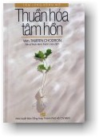

|
BuddhaSasana Home Page |
Vietnamese, with Unicode Times font |
|  |
Tấm lòng rộng mở Nguyên tác: Taming the Monkey
Mind |
-ooOoo- Lời nói đầu Tác phẩm "Thuần Hoá Tâm Hồn" hay "Cẩm Nang Ðạo Ðức Hằng Ngày của Người Phật Tử" do Tỷ-kheo-ni Thupten Chodron biên soạn mang tựa đề "Taming the Monkey Mind" đã được đánh giá là quyển sách dành cho tất cả mọi người muốn hiểu sâu sắc tâm hồn của mình. Tất cả các sự vật có mặt trên trần gian này đều do tâm thức của chúng ta tạo tác ra. Tâm thức của chúng ta là vô tận, vô biên và vô lượng. Trở về nguồn cội uyên nguyên của tâm thức có nghĩa là nhận ra được bản chất của chân như tánh. Xuất phát từ một nhận thức có tính thuyết phục về đạo Phật, quyển "Thuần Hoá Tâm Hồn" được viết với một văn phong hiện đại, trong sáng và tinh tế; nghiêm trang nhưng vẫn đan xen đôi nét hóm hỉnh. Cách lập ngôn của tác giả có tính cách gợi ý và sinh động, đã dành cho người đọc một khoảng trời tự do rộng rãi để tự mình chiêm nghiệm, tự mình nhận định, chọn lọc và hành động theo cách riêng của mình. Thông thường những quyển sách giảng giải về giáo lý đều không thể tránh khỏi một vài nhược điểm, như chỉ trình bày giáo nghĩa của một tông phái nào đó mà bỏ qua giáo nghĩa của những tông phái khác. Trong tác phẩm "Thuần Hoá Tâm Hồn" chúng ta có thể thấy những điểm như vậy không nhiều và cũng không đụng chạm đến những tư tưởng có tính chủ đạo. Tác giả trình bày khá cân đối về tất cả những pháp môn hay những tông phái chính. Dẫu sao thì tác giả cũng phải chọn một truyền thống hay một pháp môn cụ thể nào đó để tự hành trì tu tập và dùng kinh nghiệm thâm hậu đó làm nền tảng kiến thức để trình bày cho chúng ta. Hơn nữa, ưu điểm của quyển sách này là đã diễn giải được những ý tưởng cốt lõi của đạo Phật về tâm thức và về đời sống của con người, đồng thời nêu ra phương pháp vận dụng những ý tưởng đó vào việc tu tập bản thân, vào những mối quan hệ cụ thể trong xã hội, với bạn bè, với gia đình và đồng nghiệp. Như vậy quyển sách đã đề cập đến những vấn đề rất thiết thực trong cuộc sống hiện đại, trong một thế giới mà mật độ dân cư càng lúc càng dầy đặc; giá trị hiện thực của quyển sách hiển lộ rõ ràng ở đây. Có hai chương sách bàn về những vấn đề rất nhạy cảm, rất tế nhị, đặc biệt là đối với nền văn hóa Ðông phương đó là vấn đề tình yêu, tính dục và hôn nhân theo quan điểm của đạo Phật. Thông thường thì người dịch nên tránh né đi cho "an toàn" nhưng vì muốn cung cấp thêm kiến giải cho những người Phật tử còn trẻ tuổi, còn sống giữa "trần đời" nên người dịch bạo dạn giữ lại hai chương này. Mật Tông Phật giáo là một dòng truyền thừa đặc biệt của Phật giáo đã có mặt ở Việt Nam từ rất lâu nhưng không phổ biến, vì vậy mà quần chúng dễ dàng có cái nhìn phiến diện, sai lầm về tông phái này. Quyển "Thuần Hoá Tâm Hồn" góp phần làm sáng tỏ một số nét thể hiện căn bản cũng như nền tảng triết lý của Mật Tông. Ðiều thú vị là tác giả đã nêu được mối liên hệ gắn bó giữa hình thức hành trì và nội dung tông chỉ của Mật Tông, trái ngược với sự hiểu biết chung chung và thô thiển rằng Mật Tông chú trọng đến thần quyền, chú thuật và những mật pháp bí ẩn... Tác giả đã bàn thảo những vấn đề của thời đại với một cách nhìn khoáng đạt, nhẹ nhàng, chính nhờ đó mà quyển "Thuần Hoá Tâm Hồn" không chỉ phù hợp với hầu hết những người Phật tử dù thuộc về sơn môn nào, mà còn dành cho tất cả mọi người, mọi giới. Nơi đây, người dịch xin được trân trọng những lời khích lệ và sự quan tâm giúp đỡ của nhiều vị ân nhân. Cũng xin được ghi nhận công sức đóng góp của cư sĩ Tiểu Thanh Thiên trong việc ủng hộ tài chánh; cư sĩ Phan Cát Tâm và cư sĩ Tâm Thủy trong việc tỉ mỉ đọc lại bản thảo. Trong quá trình chuyển ngữ, người dịch cố gắng trung thành với những ý tưởng trong nguyên tác nhưng vẫn hướng đến việc tạo nên một dịch phẩm tiếng Việt dễ hiểu và hấp dẫn. Tuy nhiên, ở một số đoạn người dịch vẫn chưa đạt được như ý muốn. Rất mong nhận được ý kiến phản hồi của quý độc giả. Người dịch
cẩn bút -ooOoo- |
Chân thành cám ơn Đại đức Thích
Minh Thành,
Tịnh xá Trung Tâm, Bình Thạnh, Sài Gòn, đã gửi tặng bản vi tính (Bình Anson,
12-2003).
[Trở
về trang Thư Mục]
last updated: 25-12-2005